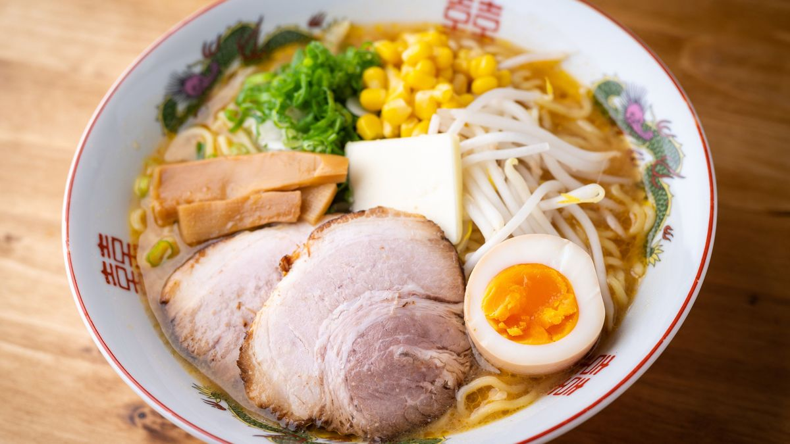

ラーメンの歴史
ラーメンの歴史は非常に複雑で、複数の文化が交じり合った結果として現れた料理です。
- ラーメンの起源は中国にさかのぼることができます。元々、中国では小麦粉を練って作った麺をさまざまなスープと組み合わせて食べる習慣があり、これが日本に伝わったのは、19世紀末から20世紀初頭のことと言われています。特に横浜などの港町に中国人の移民が多く住みつくようになり、ここからラーメンが日本に広がっていきました。
- 明治時代（1868-1912）から大正時代（1912-1926）
横浜や神戸などの国際貿易港にあった「中華街」を中心に、中国料理の一環として「南京そば」や「支那そば」と呼ばれるラーメンが紹介されました - 昭和初期（1926-1989）
ラーメンが庶民の間で広まり始めたのは昭和初期です。特に第一次世界大戦後の不況時には、安価でボリュームがあるラーメンが人気を博しました。 昭和20年代には、日本全国にラーメン屋台が出現し、多様な地域ごとのラーメンが生まれてきました。 - 戦後（1945-1950年代）
第二次世界大戦後の日本では、食料不足が深刻化しました。アメリカからの小麦の大量輸入が行われ、これを利用したラーメンが再び注目されました。インスタントラーメンの発明1958年、日清食品の安藤百福が「チキンラーメン」を開発し、これが瞬く間に日本中に広まりました。これにより、ラーメンはさらに身近な食品となりました。 - 昭和後期から平成時代（1980年代-2000年代）
この時期には、ラーメンに特化した専門店が次々とオープンし、地域ごとの特色を持ったラーメン（例:札幌ラーメン、博多ラーメン、喜多方ラーメンなど）が人気を集めました。1994年には横浜に「新横浜ラーメン博物館」がオープンし、日本全国のラーメン文化を一堂に紹介する施設ができました。 - 現代のラーメン
21世紀に入ると、ラーメンは日本だけでなく、世界中で人気を博する料理となっています。特にアジア、アメリカ、ヨーロッパ各地に日本のラーメン店が続々とオープンし、ラーメンは一種の「グローバルフード」として広がっています。また、現代のラーメンは伝統的な味に加えて、ベジタリアンやビーガン向けのメニューも充実しており、健康志向の人々にも配慮が行き届いています。新たなフュージョンスタイルのラーメンも登場しており、常に進化を続けています。